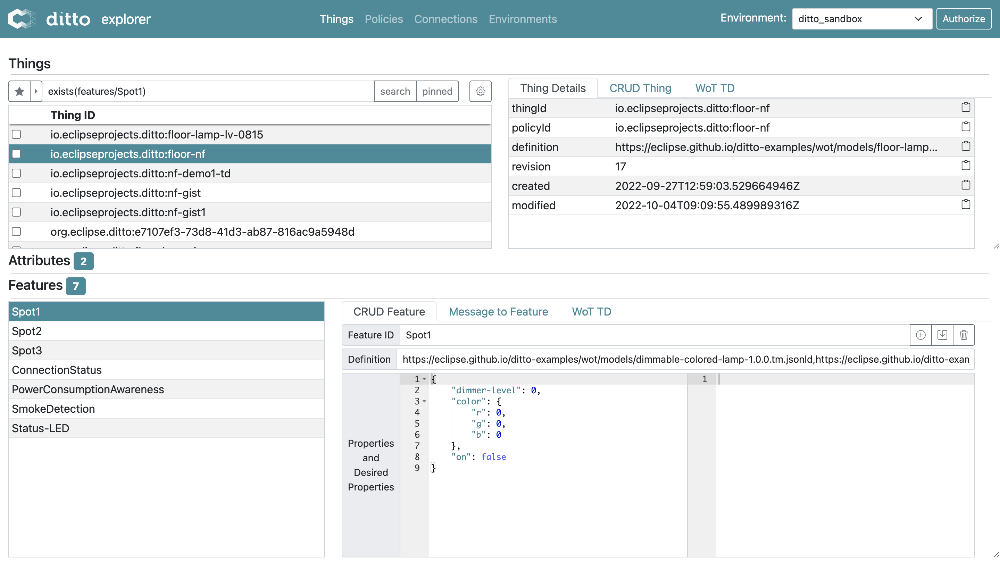
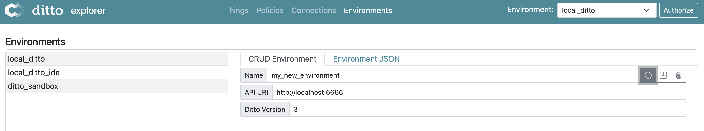

The Explorer UI is a browser-based tool for managing Things, Policies, and Connections in any Ditto instance – no code required.

Overview
The Explorer UI gives you a visual interface to:
- Browse, create, update, and delete Things
- Inspect and manage Policies
- Configure and monitor Connections
- Send messages to Things and Features
- Search Things using RQL filters
You can connect the UI to different Ditto instances (local, sandbox, staging, production) and switch between them instantly.
Getting started
Use the hosted version
Open the Explorer UI online, pre-configured for the Ditto sandbox:
https://eclipse-ditto.github.io/ditto/index.html?primaryEnvironmentName=ditto_sandbox
Run locally with Docker
# Latest released version:
docker run -p 8088:8080 eclipse/ditto-ui
# Latest nightly build:
docker run -p 8088:8080 eclipse/ditto-ui:nightly
Then open http://localhost:8088 in your browser.
Configuration
Environments
You configure different Ditto instances as “Environments” and switch between them using the dropdown in the upper right corner.
Create a new environment
Specify:
- A unique name
- The API URI to reach Ditto
- The Ditto major version (2 or 3)

Environments are stored in your browser’s local storage. You can also edit them in the “Environments” tab.
Control environments via URL parameters
| URL query parameter | Description |
|---|---|
primaryEnvironmentName |
Name of the environment to select by default |
environmentsURL |
URL to a JSON file with environment configurations |
Example:
https://<ditto-hostname>/ui/?environmentsURL=/ui-environments.json&primaryEnvironmentName=dev
Environment configuration reference
Each environment is defined with the following structure:
type Environment = {
api_uri: string,
ditto_version: number,
disablePolicies?: boolean,
disableConnections?: boolean,
disableOperations?: boolean,
authSettings?: AuthSettings,
searchNamespaces?: string,
messageTemplates?: any,
fieldList?: FieldListItem[],
filterList?: string[],
pinnedThings?: string[],
recentPolicyIds?: string[],
}
Authentication type definitions
type AuthSettings = {
main: MainAuthSettings, // settings for things+policies access
devops: CommonAuthSettings, // settings for connections+operations access
oidc: Record<string, OidcProviderConfiguration> // shared OIDC provider configs, keyed by provider name
}
type CommonAuthSettings = {
method: AuthMethod, // active authentication method
oidc: OidcAuthSettings, // SSO (OIDC) settings
bearer: BearerAuthSettings, // manual Bearer token settings
basic: BasicAuthSettings, // Basic Auth settings
}
type MainAuthSettings = CommonAuthSettings & {
pre: PreAuthSettings // pre-authenticated settings (main context only)
}
// extends UserManagerSettings from 'oidc-client-ts'
type OidcProviderConfiguration = UserManagerSettings & {
displayName: string, // label shown in the OIDC provider dropdown
extractBearerTokenFrom: string // field from the /token response to use as Bearer token ("access_token" or "id_token")
}
enum AuthMethod {
oidc = 'oidc',
basic = 'basic',
bearer = 'bearer',
pre = 'pre'
}
type OidcAuthSettings = {
enabled: boolean, // show the OIDC section in the Authorize popup
defaultProvider: string | null, // must match a key in AuthSettings.oidc
autoSso: boolean, // automatically start SSO when the Authorize popup opens
provider?: string // currently chosen provider (user-changeable)
}
type BasicAuthSettings = {
enabled: boolean, // show the Basic Auth section
defaultUsernamePassword: string | null // pre-filled "user:pass"
}
type BearerAuthSettings = {
enabled: boolean // show the Bearer Auth section
}
type PreAuthSettings = {
enabled: boolean, // show the Pre-Authenticated section
defaultDittoPreAuthenticatedUsername: string | null, // pre-filled username
dittoPreAuthenticatedUsername?: string // cached username
}
Example environment JSON
{
"local_ditto": {
"api_uri": "http://localhost:8080",
"ditto_version": 3,
"authSettings": {
"main": {
"method": "basic",
"oidc": { "enabled": false },
"basic": {
"enabled": true,
"defaultUsernamePassword": "ditto:ditto"
},
"bearer": { "enabled": true },
"pre": { "enabled": false }
},
"devops": {
"method": "basic",
"oidc": { "enabled": false },
"basic": {
"enabled": true,
"defaultUsernamePassword": "devops:foobar"
},
"bearer": { "enabled": true }
},
"oidc": {}
}
},
"local_ditto_ide": {
"api_uri": "http://localhost:8080",
"ditto_version": 3,
"authSettings": {
"main": {
"method": "pre",
"oidc": { "enabled": false },
"basic": {
"enabled": true,
"defaultUsernamePassword": null
},
"bearer": { "enabled": true },
"pre": {
"enabled": false,
"defaultDittoPreAuthenticatedUsername": "pre:ditto"
}
},
"devops": {
"method": "basic",
"oidc": { "enabled": false },
"basic": {
"enabled": true,
"defaultUsernamePassword": "devops:foobar"
},
"bearer": { "enabled": true }
},
"oidc": {}
}
},
"ditto_sandbox": {
"api_uri": "https://ditto.eclipseprojects.io",
"ditto_version": 3,
"disableConnections": true,
"disableOperations": true,
"authSettings": {
"main": {
"method": "basic",
"oidc": {
"enabled": true,
"defaultProvider": "fake"
},
"basic": {
"enabled": true,
"defaultUsernamePassword": "ditto:ditto"
},
"bearer": { "enabled": true },
"pre": { "enabled": false }
},
"devops": {
"method": "basic",
"oidc": { "enabled": false },
"basic": { "enabled": false },
"bearer": { "enabled": false }
},
"oidc": {}
}
},
"oidc_example": {
"api_uri": "http://localhost:8080",
"ditto_version": 3,
"authSettings": {
"main": {
"method": "oidc",
"oidc": {
"enabled": true,
"defaultProvider": "fake",
"autoSso": true
},
"basic": {
"enabled": false,
"defaultUsernamePassword": null
},
"bearer": { "enabled": true },
"pre": {
"enabled": false,
"defaultDittoPreAuthenticatedUsername": null
}
},
"devops": {
"method": "oidc",
"oidc": {
"enabled": true,
"defaultProvider": "fake",
"autoSso": true
},
"basic": {
"enabled": false,
"defaultUsernamePassword": null
},
"bearer": { "enabled": true }
},
"oidc": {
"providers": {
"fake": {
"displayName": "Fake IDP to test",
"extractBearerTokenFrom": "access_token",
"authority": "http://localhost:9900/fake",
"client_id": "some-client-id",
"redirect_uri": "http://localhost:8000",
"post_logout_redirect_uri": "http://localhost:8000",
"response_type": "code",
"scope": "openid"
}
}
}
}
}
}
Authentication methods
The UI supports these authentication methods for both the “main” (Things/Policies) and “devops” (Connections/Operations) contexts:
| Method | Description |
|---|---|
basic |
HTTP Basic Auth with username and password |
bearer |
Manually provided Bearer token |
oidc |
OpenID Connect / SSO via a configured provider |
pre |
Pre-authenticated username (main context only) |
Authorization
To access the REST API of your selected Ditto instance, click “Authorize” and provide valid credentials for your chosen authentication method.
OpenID Connect configuration
The UI uses the oidc-client-ts library. Configure OIDC providers in your environment’s authSettings.oidc.providers section. Refer to the oidc-client-ts documentation for all available UserManagerSettings options.
Silent token refresh
The UI supports automatic silent token refresh to keep sessions alive without re-authentication. Your OIDC provider must support:
offline_accessscope for refresh tokensrefresh_tokengrant type
Configure it in your OIDC provider settings:
{
"oidc": {
"providers": {
"your-provider": {
"displayName": "Your OIDC Provider",
"extractBearerTokenFrom": "access_token",
"authority": "https://your-oidc-provider.com",
"client_id": "your-client-id",
"redirect_uri": "https://your-ditto-ui.com",
"post_logout_redirect_uri": "https://your-ditto-ui.com",
"silent_redirect_uri": "https://your-ditto-ui.com/silent-callback.html",
"response_type": "code",
"scope": "openid groups email offline_access",
"automaticSilentRenew": true
}
}
}
}
Set post_logout_redirect_uri to point back to your UI so users return to the application after logout. The silent refresh callback HTML page must be served at the path configured in silent_redirect_uri (e.g., /silent-callback.html).
Further reading
- HTTP API documentation – full API reference
- Authentication – authentication mechanisms in Ditto